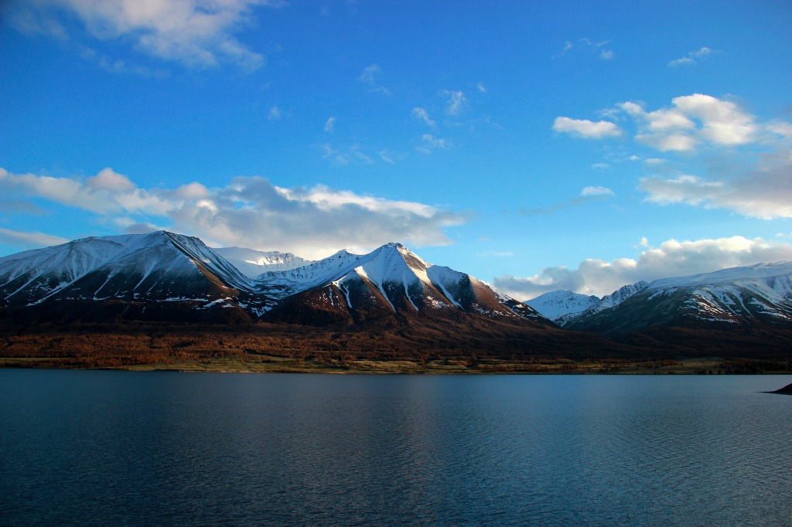
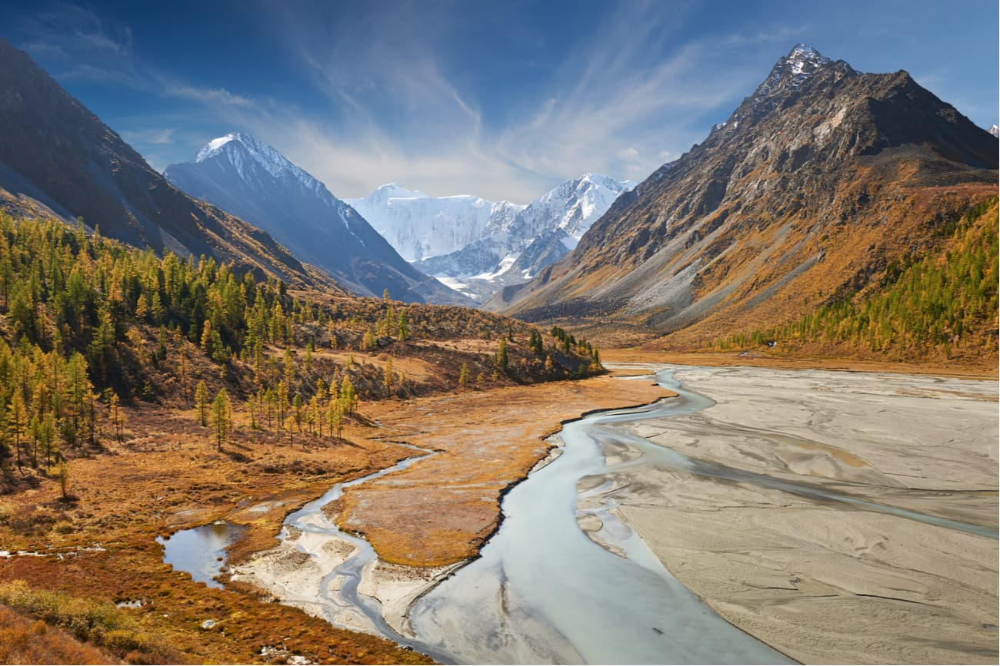
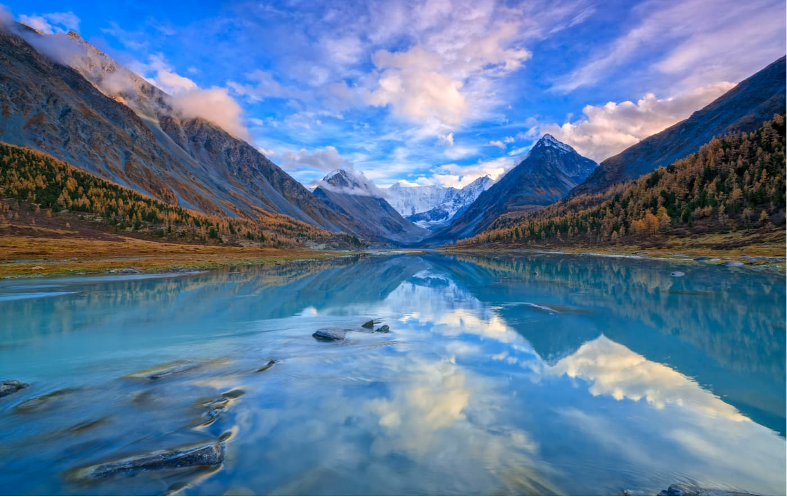
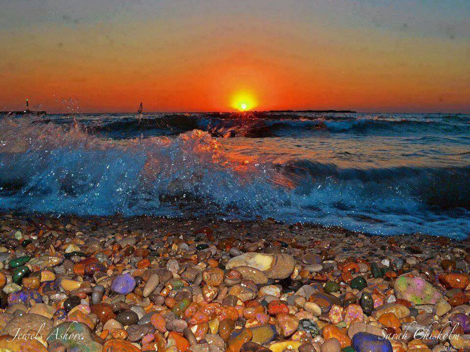
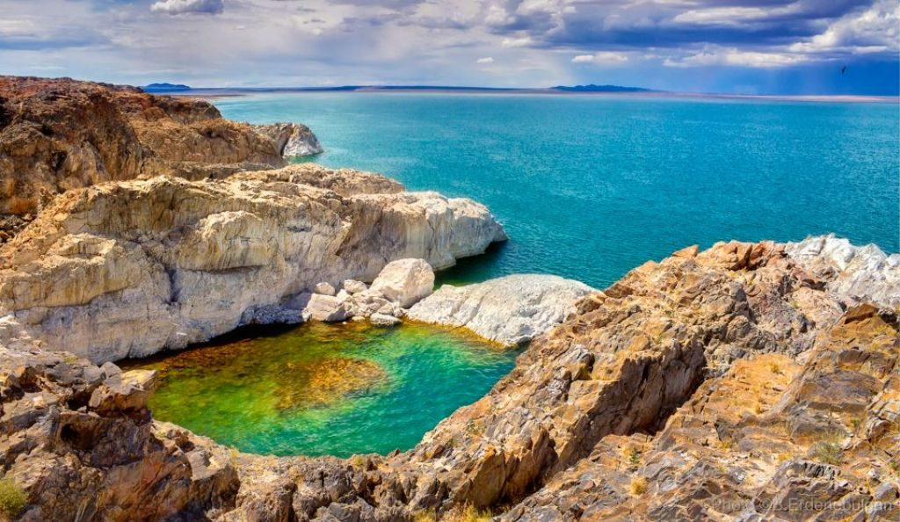

Exploring the Mongolian Gobi Desert can be a remarkable adventure with its vast landscapes, unique wildlife, and nomadic culture. Here's a sample itinerary for a memorable trip to the Mongolian Gobi:
Day 1: Ulaanbaatar
Arrive in Ulaanbaatar, the capital of Mongolia.
Explore key attractions such as Sukhbaatar Square, Gandantegchinlen Monastery, and the National Museum of Mongolia.
Overnight in Ulaanbaatar.
Day 2: Ulaanbaatar to Dalanzadgad
Fly or drive to Dalanzadgad, the capital of the South Gobi Province.
Visit the local museum to gain insights into the region's history and culture.
Explore the surrounding landscapes.
Overnight in Dalanzadgad.
Day 3-4: Khongoryn Els Sand Dunes
Head to the famous Khongoryn Els, also known as the Singing Dunes.
Climb the dunes for panoramic views of the Gobi Desert.
Experience a camel trek across the vast desert.
Camp in a traditional Mongolian ger near the dunes.
Day 5: Yolyn Am (Yol Valley)
Travel to Yolyn Am, a deep and narrow gorge in the Gurvan Saikhan Mountains.
Hike through the gorge, known for its ice formations even in the summer.
Spot wildlife such as wild sheep and ibex.
Overnight near Yolyn Am.
Day 6: Bayanzag (Flaming Cliffs)
Visit Bayanzag, known as the Flaming Cliffs, famous for dinosaur fossils and red rock formations.
Explore the area and enjoy a beautiful sunset.
Camp under the stars or stay in a nearby ger.
Day 7: Ongi Monastery
Drive to Ongi Monastery, a historically significant site with ruins of Buddhist monastic complexes.
Explore the ruins and enjoy the serene surroundings.
Overnight near Ongi Monastery.
Day 8: Return to Ulaanbaatar
Drive or fly back to Ulaanbaatar.
Spend the evening exploring the city or shopping for souvenirs.
Farewell dinner in Ulaanbaatar.
Day 9: Departure
Depending on your flight schedule, you may have some time for last-minute sightseeing or shopping.
Depart from Ulaanbaatar.
Price: $1200

Altai Tawan Bogd


Altai Tavan Bogd, located in the western part of Mongolia, is a stunning mountain range with diverse landscapes, including
glaciers, high peaks, and nomadic communities.Here's a suggested itinerary for a trip to Altai Tavan Bogd:
Day 1: Arrival in Ölgii
Arrive in Ölgii, the capital of Bayan-Ölgii Province, via a domestic flight.
Explore Ölgii town and experience the unique Kazakh culture.
Visit a local museum to learn about the Kazakh nomadic heritage.
Overnight in Ölgii.
Day 2: Altai Tavan Bogd Base Camp
Drive to the Altai Tavan Bogd National Park.
Trek to the Altai Tavan Bogd Base Camp, enjoying panoramic views.
Explore the area, including the Potanin Glacier and the stunning landscapes.
Set up camp near the base camp.
Overnight in tents.
Day 3: Explore and Camp near Tavan Bogd
Spend the day exploring the base camp surroundings and the Potanin Glacier.
Optionally, embark on a short trek to the nearby lakes or viewpoints.
Camp overnight near Tavan Bogd for a more immersive experience.
Enjoy a campfire under the stars.
Day 4: Return to Ölgii and Departure
Trek back to the trailhead from Tavan Bogd.
Return to Ölgii in the afternoon.
Visit local eagle hunters or explore the surrounding landscapes.
Depart from Ölgii or take an evening flight back to Ulaanbaatar.
Depending on your schedule, explore Ulaanbaatar or do some last-minute shopping.
Depart from Ulaanbaatar or your next destination.
Price: $850

Khyrgas Lake

Exploring Khyargas Lake in Mongolia offers a serene and picturesque experience.
Day 1: Arrival in Ulaanbaatar
Arrive in Ulaanbaatar, the capital of Mongolia.
Explore key attractions such as Sukhbaatar Square and the National Museum of Mongolia.
Overnight in Ulaanbaatar.
Day 2: Fly to Ulgii
Take a domestic flight to Ulgii, the capital of Bayan-Ulgii Province.
Explore Ulgii town and experience the local Kazakh culture.
Visit a local museum to learn about the region's history and traditions.
Overnight in Ulgii.
Day 3: Drive to Khyargas Lake
Begin the journey to Khyargas Lake, enjoying the scenic landscapes.
Stop in local nomadic communities along the way to experience the traditional way of life.
Arrive at Khyargas Lake and set up camp.
Enjoy the evening by the lakeside.
Overnight in tents.
Day 4: Explore Khyargas Lake
Spend the day exploring the shores of Khyargas Lake.
Enjoy activities such as hiking, bird-watching, or simply relaxing by the lake.
Take a boat trip on the lake if available.
Camp overnight by Khyargas Lake.
Enjoy stargazing in the remote wilderness.
Day 5: Return to Ulgii and Departure
Drive back to Ulgii, taking in the views along the way.
Arrive in Ulgii and explore any remaining points of interest.
Depending on your flight schedule, either depart directly from Ulgii or take a flight back to Ulaanbaatar for your departure.